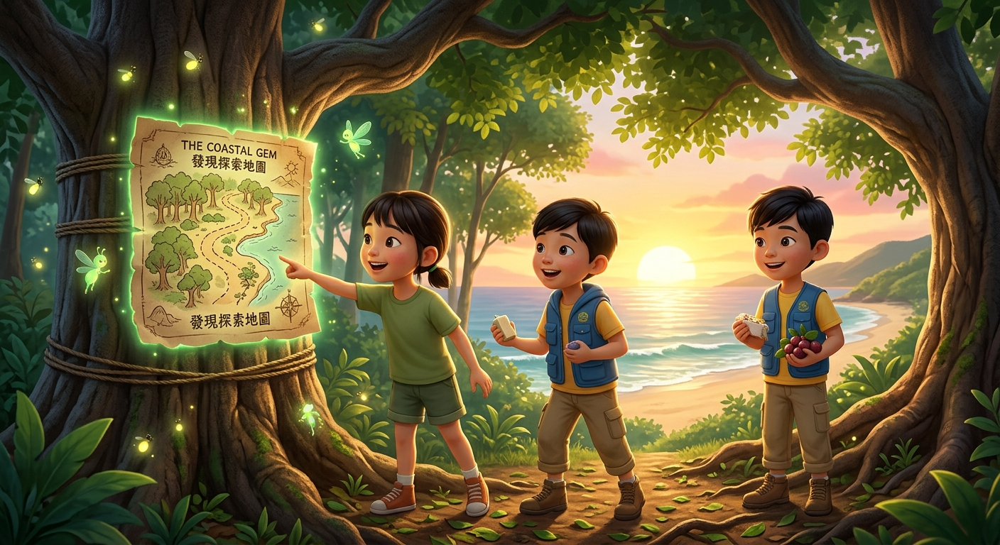

尋找濱海綠寶石
天然植物皂 ‧ 綠生活 ‧ 碳權價值
跟著沐晴與秉勳的足跡，一起踏上濱海森林冒險之旅！發現大樹的化學天然替代妙方，體驗手作環保皂，計算低碳生活價值，成為守護地球的「國際小公民」。
1. 繪本故事導讀
全劇10頁繪本導覽，了解沐晴與秉勳發現天然清潔與大樹固碳的精采故事。
2. 天然環保皂工作坊
認識無患子與油脂皂化，模擬調配專屬環保皂，學習保護海洋水資源。
3. 碳足跡與大樹固碳
計算日常低碳行動減碳量，了解樹木碳吸塵器與碳權生態價值的秘密。
《尋找濱海綠寶石》完整導讀

陽光灑在海岸邊的綠色森林上。小學四年級的沐晴與秉勳，在學校的樹木角落發現了一張泛黃的探索地圖。地圖上赫然寫著：「沿著海岸尋找，就能找到守護地球的『濱海綠寶石』！」兩個好朋友充滿好奇，踏上了這場未知的綠色冒險之旅。
學習點撥：
環境倫理與自然探索：從觀察校園與周遭海岸生態開始，培養對大自然的好奇心與愛護心。
樹與生活應用—清潔一把皂
認識植物中的天然清潔成分，體驗手作「綠寶石天然環保皂」，守護水資源與海洋！
專屬「綠寶石環保皂」虛擬配方工坊
選擇天然植物原料，並調配屬於你的植物清潔皂吧！
天然綠樹葉環保皂
使用無患子天然皂素，可在自然界100%快速分解，保護水資源不生病！
為什麼天然植物皂能保護海洋？
- • 市售化學清潔劑常含界面活性劑與合成香精，容易殘留在河川，造成水質富營養化。
- • 無患子果實含有天然界面活性劑「皂素」（Saponin），加水搓揉就能產生細緻泡沫！
- • 天然植物皂進入水體後，微生物能快速將其分解為無害物質，讓海洋生物健康生活。
綠生活—碳權價值高
大樹是地球的「碳吸塵器」！算算你的生活碳足跡，一起幫地球降溫。
個人週碳足跡與大樹固碳換算機
勾選你在這一週內落實的低碳綠生活習慣：
一棵成年大樹一年約可吸收 12 kg 二氧化碳（平均每週約 0.23 kg）。
什麼是「碳權」與「固碳」？
樹木在進行光合作用時，會把空氣中的二氧化碳吸收並儲存在樹幹與根部，這就是**「固碳」**。當森林保護得越好，能夠儲存的碳量越多，這些減碳效益在國際上可以換算為**「碳權」**價值，是保護地球非常珍貴的資產！
國際小公民—綠生活承諾書
簽署你的永續承諾，獲得專屬「綠生活國際小公民」數位徽章！
簽署綠色行動承諾
國際小公民承諾證書
我承諾落實自備餐具、選用天然皂與在地低碳飲食，用行動守護海洋與濱海綠寶石！
濱海綠寶石 ‧ 永續大挑戰
考考你！看看你對天然清潔皂與低碳生活了解多少？
載入中...
挑戰完成！
你的最終得分：100 分
四年級「濱海綠寶石」2節課（80分鐘）教案備課專區
對應校訂課程架構圖與核心素養對照表
- 1. 引起動機 (10 min)：「天然 vs. 化學清潔劑大比拚」展示無患子與天然油脂，討論清潔用品來源。
- 2. 發展活動 (20 min)：「植物清潔皂的奇幻旅程」講解皂化原理與分解效益，進行網頁虛擬環保皂設計體驗。
- 3. 評量展演 (10 min)：「綜藝劇場：環保清潔小達人」分組展演推廣天然皂保護海洋水資源。
- 1. 引起動機 (10 min)：「什麼是碳足跡與碳權？」討論生活碳排放與大樹「碳吸塵器」固碳功能。
- 2. 發展活動 (20 min)：「班級綠色減碳小算盤」使用互動計算機換算個人低碳行動，規劃減碳清單。
- 3. 評量展演 (10 min)：「國際小公民：綠生活承諾簽署」線上填寫承諾書並頒發國際小公民數位徽章。